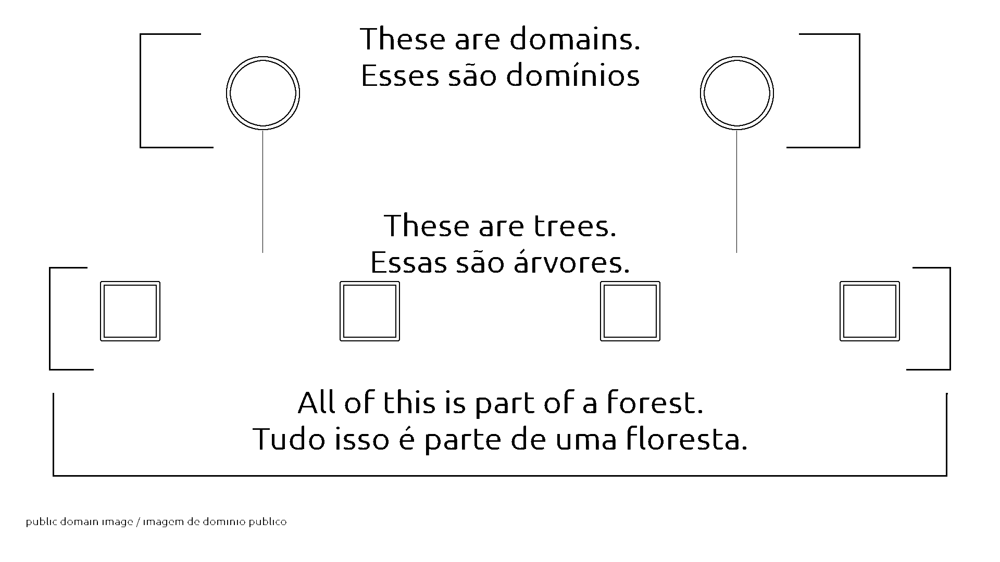

2025-06-01
Un dominio de Active Directory (AD) es un servicio de directorio de Microsft creado para redes de dominio de Windows. Incluye información como cuentas de usuario, ordenadores y otros recursos de red. Un bosque es una colección de árboles. Un árbol es una colección de dominios AD. A forest is a collection of trees. A tree is a collection of AD domains.
